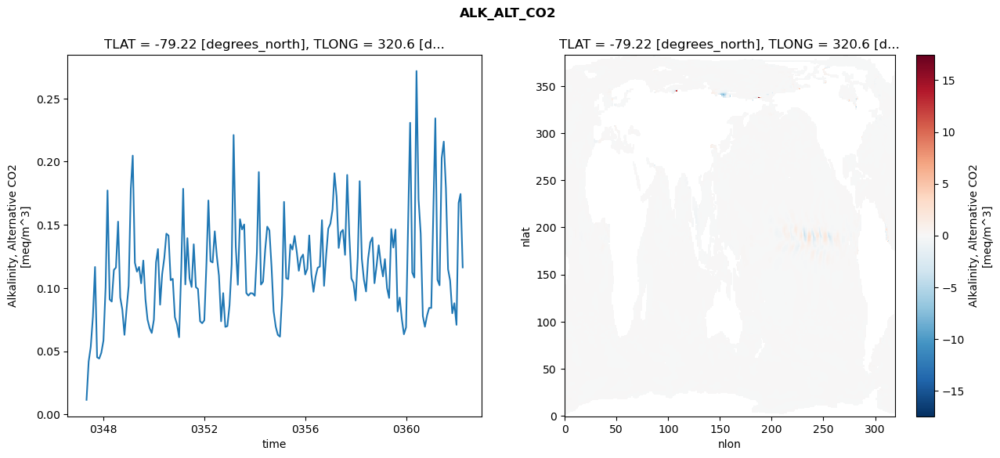
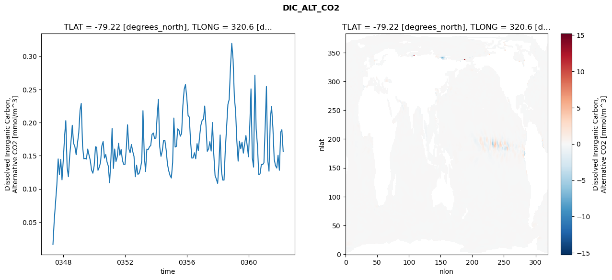
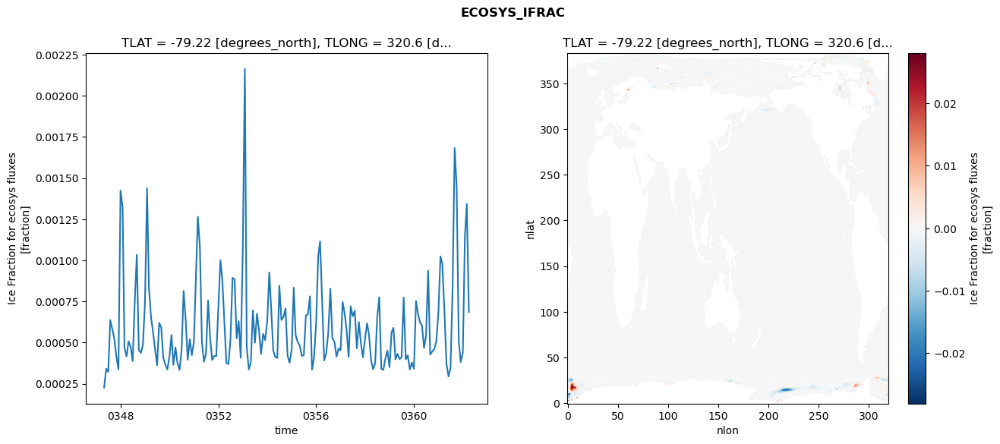
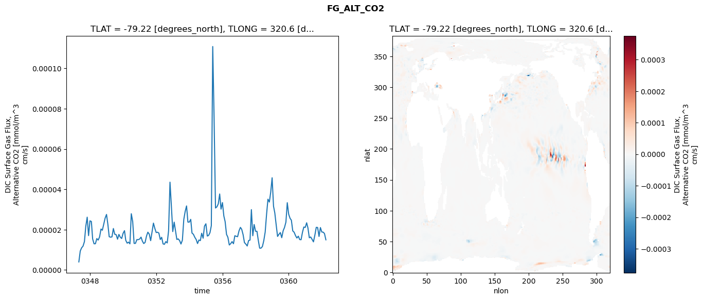

glb-dor_North_Atlantic_basin_032_1999-04-01_00129#
Simulation details#
Case: smyle.cdr-atlas-v0.glb-dor_North_Atlantic_basin_032_1999-04-01_00129.001
Basin: North_Atlantic_basin
Polygon: 32.0
Start date: 1999-04
Show code cell source Hide code cell source
import xarray as xr
import matplotlib.pyplot as plt
Show code cell source Hide code cell source
zarr_store = "/path/to/zarr/store"
# Parameters
zarr_store = "/global/cfs/projectdirs/m4746/Projects/Ocean-CDR-Atlas-v0/data/validation/smyle.cdr-atlas-v0.glb-dor_North_Atlantic_basin_032_1999-04-01_00129.001.validation.zarr"
Show code cell source Hide code cell source
%%time
ds_o = xr.open_zarr(zarr_store).compute()
ds_o
CPU times: user 667 ms, sys: 421 ms, total: 1.09 s
Wall time: 1.39 s
<xarray.Dataset> Size: 2MB
Dimensions: (nlat: 384, nlon: 320, time: 180)
Coordinates:
TLAT float64 8B -79.22
TLONG float64 8B 320.6
ULAT float64 8B -78.95
ULONG float64 8B 321.1
* time (time) object 1kB 0347-05-01 00:00:00 ... 0362-04-01 0...
z_t float32 4B 500.0
Dimensions without coordinates: nlat, nlon
Data variables:
ALK_ALT_CO2_diff (nlat, nlon) float32 492kB nan nan nan ... nan nan nan
ALK_ALT_CO2_rmse (time) float64 1kB 0.01158 0.04189 ... 0.1744 0.1163
DIC_ALT_CO2_diff (nlat, nlon) float32 492kB nan nan nan ... nan nan nan
DIC_ALT_CO2_rmse (time) float64 1kB 0.01627 0.0532 ... 0.1893 0.1566
ECOSYS_IFRAC_diff (nlat, nlon) float32 492kB nan nan nan ... nan nan nan
ECOSYS_IFRAC_rmse (time) float64 1kB 0.0002263 0.0003411 ... 0.0006863
FG_ALT_CO2_diff (nlat, nlon) float32 492kB nan nan nan ... nan nan nan
FG_ALT_CO2_rmse (time) float64 1kB 3.988e-06 9.398e-06 ... 1.495e-05xarray.Dataset
- nlat: 384
- nlon: 320
- time: 180
- TLAT()float64-79.22
- long_name :
- array of t-grid latitudes
- units :
- degrees_north
array(-79.22052261)
- TLONG()float64320.6
- long_name :
- array of t-grid longitudes
- units :
- degrees_east
array(320.56250892)
- ULAT()float64-78.95
- long_name :
- array of u-grid latitudes
- units :
- degrees_north
array(-78.95289509)
- ULONG()float64321.1
- long_name :
- array of u-grid longitudes
- units :
- degrees_east
array(321.12500894)
- time(time)object0347-05-01 00:00:00 ... 0362-04-...
- bounds :
- time_bound
- long_name :
- time
array([cftime.DatetimeNoLeap(347, 5, 1, 0, 0, 0, 0, has_year_zero=True), cftime.DatetimeNoLeap(347, 6, 1, 0, 0, 0, 0, has_year_zero=True), cftime.DatetimeNoLeap(347, 7, 1, 0, 0, 0, 0, has_year_zero=True), cftime.DatetimeNoLeap(347, 8, 1, 0, 0, 0, 0, has_year_zero=True), cftime.DatetimeNoLeap(347, 9, 1, 0, 0, 0, 0, has_year_zero=True), cftime.DatetimeNoLeap(347, 10, 1, 0, 0, 0, 0, has_year_zero=True), cftime.DatetimeNoLeap(347, 11, 1, 0, 0, 0, 0, has_year_zero=True), cftime.DatetimeNoLeap(347, 12, 1, 0, 0, 0, 0, has_year_zero=True), cftime.DatetimeNoLeap(348, 1, 1, 0, 0, 0, 0, has_year_zero=True), cftime.DatetimeNoLeap(348, 2, 1, 0, 0, 0, 0, has_year_zero=True), cftime.DatetimeNoLeap(348, 3, 1, 0, 0, 0, 0, has_year_zero=True), cftime.DatetimeNoLeap(348, 4, 1, 0, 0, 0, 0, has_year_zero=True), cftime.DatetimeNoLeap(348, 5, 1, 0, 0, 0, 0, has_year_zero=True), cftime.DatetimeNoLeap(348, 6, 1, 0, 0, 0, 0, has_year_zero=True), cftime.DatetimeNoLeap(348, 7, 1, 0, 0, 0, 0, has_year_zero=True), cftime.DatetimeNoLeap(348, 8, 1, 0, 0, 0, 0, has_year_zero=True), cftime.DatetimeNoLeap(348, 9, 1, 0, 0, 0, 0, has_year_zero=True), cftime.DatetimeNoLeap(348, 10, 1, 0, 0, 0, 0, has_year_zero=True), cftime.DatetimeNoLeap(348, 11, 1, 0, 0, 0, 0, has_year_zero=True), cftime.DatetimeNoLeap(348, 12, 1, 0, 0, 0, 0, has_year_zero=True), cftime.DatetimeNoLeap(349, 1, 1, 0, 0, 0, 0, has_year_zero=True), cftime.DatetimeNoLeap(349, 2, 1, 0, 0, 0, 0, has_year_zero=True), cftime.DatetimeNoLeap(349, 3, 1, 0, 0, 0, 0, has_year_zero=True), cftime.DatetimeNoLeap(349, 4, 1, 0, 0, 0, 0, has_year_zero=True), cftime.DatetimeNoLeap(349, 5, 1, 0, 0, 0, 0, has_year_zero=True), cftime.DatetimeNoLeap(349, 6, 1, 0, 0, 0, 0, has_year_zero=True), cftime.DatetimeNoLeap(349, 7, 1, 0, 0, 0, 0, has_year_zero=True), cftime.DatetimeNoLeap(349, 8, 1, 0, 0, 0, 0, has_year_zero=True), cftime.DatetimeNoLeap(349, 9, 1, 0, 0, 0, 0, has_year_zero=True), cftime.DatetimeNoLeap(349, 10, 1, 0, 0, 0, 0, has_year_zero=True), cftime.DatetimeNoLeap(349, 11, 1, 0, 0, 0, 0, has_year_zero=True), cftime.DatetimeNoLeap(349, 12, 1, 0, 0, 0, 0, has_year_zero=True), cftime.DatetimeNoLeap(350, 1, 1, 0, 0, 0, 0, has_year_zero=True), cftime.DatetimeNoLeap(350, 2, 1, 0, 0, 0, 0, has_year_zero=True), cftime.DatetimeNoLeap(350, 3, 1, 0, 0, 0, 0, has_year_zero=True), cftime.DatetimeNoLeap(350, 4, 1, 0, 0, 0, 0, has_year_zero=True), cftime.DatetimeNoLeap(350, 5, 1, 0, 0, 0, 0, has_year_zero=True), cftime.DatetimeNoLeap(350, 6, 1, 0, 0, 0, 0, has_year_zero=True), cftime.DatetimeNoLeap(350, 7, 1, 0, 0, 0, 0, has_year_zero=True), cftime.DatetimeNoLeap(350, 8, 1, 0, 0, 0, 0, has_year_zero=True), cftime.DatetimeNoLeap(350, 9, 1, 0, 0, 0, 0, has_year_zero=True), cftime.DatetimeNoLeap(350, 10, 1, 0, 0, 0, 0, has_year_zero=True), cftime.DatetimeNoLeap(350, 11, 1, 0, 0, 0, 0, has_year_zero=True), cftime.DatetimeNoLeap(350, 12, 1, 0, 0, 0, 0, has_year_zero=True), cftime.DatetimeNoLeap(351, 1, 1, 0, 0, 0, 0, has_year_zero=True), cftime.DatetimeNoLeap(351, 2, 1, 0, 0, 0, 0, has_year_zero=True), cftime.DatetimeNoLeap(351, 3, 1, 0, 0, 0, 0, has_year_zero=True), cftime.DatetimeNoLeap(351, 4, 1, 0, 0, 0, 0, has_year_zero=True), cftime.DatetimeNoLeap(351, 5, 1, 0, 0, 0, 0, has_year_zero=True), cftime.DatetimeNoLeap(351, 6, 1, 0, 0, 0, 0, has_year_zero=True), cftime.DatetimeNoLeap(351, 7, 1, 0, 0, 0, 0, has_year_zero=True), cftime.DatetimeNoLeap(351, 8, 1, 0, 0, 0, 0, has_year_zero=True), cftime.DatetimeNoLeap(351, 9, 1, 0, 0, 0, 0, has_year_zero=True), cftime.DatetimeNoLeap(351, 10, 1, 0, 0, 0, 0, has_year_zero=True), cftime.DatetimeNoLeap(351, 11, 1, 0, 0, 0, 0, has_year_zero=True), cftime.DatetimeNoLeap(351, 12, 1, 0, 0, 0, 0, has_year_zero=True), cftime.DatetimeNoLeap(352, 1, 1, 0, 0, 0, 0, has_year_zero=True), cftime.DatetimeNoLeap(352, 2, 1, 0, 0, 0, 0, has_year_zero=True), cftime.DatetimeNoLeap(352, 3, 1, 0, 0, 0, 0, has_year_zero=True), cftime.DatetimeNoLeap(352, 4, 1, 0, 0, 0, 0, has_year_zero=True), cftime.DatetimeNoLeap(352, 5, 1, 0, 0, 0, 0, has_year_zero=True), cftime.DatetimeNoLeap(352, 6, 1, 0, 0, 0, 0, has_year_zero=True), cftime.DatetimeNoLeap(352, 7, 1, 0, 0, 0, 0, has_year_zero=True), cftime.DatetimeNoLeap(352, 8, 1, 0, 0, 0, 0, has_year_zero=True), cftime.DatetimeNoLeap(352, 9, 1, 0, 0, 0, 0, has_year_zero=True), cftime.DatetimeNoLeap(352, 10, 1, 0, 0, 0, 0, has_year_zero=True), cftime.DatetimeNoLeap(352, 11, 1, 0, 0, 0, 0, has_year_zero=True), cftime.DatetimeNoLeap(352, 12, 1, 0, 0, 0, 0, has_year_zero=True), cftime.DatetimeNoLeap(353, 1, 1, 0, 0, 0, 0, has_year_zero=True), cftime.DatetimeNoLeap(353, 2, 1, 0, 0, 0, 0, has_year_zero=True), cftime.DatetimeNoLeap(353, 3, 1, 0, 0, 0, 0, has_year_zero=True), cftime.DatetimeNoLeap(353, 4, 1, 0, 0, 0, 0, has_year_zero=True), cftime.DatetimeNoLeap(353, 5, 1, 0, 0, 0, 0, has_year_zero=True), cftime.DatetimeNoLeap(353, 6, 1, 0, 0, 0, 0, has_year_zero=True), cftime.DatetimeNoLeap(353, 7, 1, 0, 0, 0, 0, has_year_zero=True), cftime.DatetimeNoLeap(353, 8, 1, 0, 0, 0, 0, has_year_zero=True), cftime.DatetimeNoLeap(353, 9, 1, 0, 0, 0, 0, has_year_zero=True), cftime.DatetimeNoLeap(353, 10, 1, 0, 0, 0, 0, has_year_zero=True), cftime.DatetimeNoLeap(353, 11, 1, 0, 0, 0, 0, has_year_zero=True), cftime.DatetimeNoLeap(353, 12, 1, 0, 0, 0, 0, has_year_zero=True), cftime.DatetimeNoLeap(354, 1, 1, 0, 0, 0, 0, has_year_zero=True), cftime.DatetimeNoLeap(354, 2, 1, 0, 0, 0, 0, has_year_zero=True), cftime.DatetimeNoLeap(354, 3, 1, 0, 0, 0, 0, has_year_zero=True), cftime.DatetimeNoLeap(354, 4, 1, 0, 0, 0, 0, has_year_zero=True), cftime.DatetimeNoLeap(354, 5, 1, 0, 0, 0, 0, has_year_zero=True), cftime.DatetimeNoLeap(354, 6, 1, 0, 0, 0, 0, has_year_zero=True), cftime.DatetimeNoLeap(354, 7, 1, 0, 0, 0, 0, has_year_zero=True), cftime.DatetimeNoLeap(354, 8, 1, 0, 0, 0, 0, has_year_zero=True), cftime.DatetimeNoLeap(354, 9, 1, 0, 0, 0, 0, has_year_zero=True), cftime.DatetimeNoLeap(354, 10, 1, 0, 0, 0, 0, has_year_zero=True), cftime.DatetimeNoLeap(354, 11, 1, 0, 0, 0, 0, has_year_zero=True), cftime.DatetimeNoLeap(354, 12, 1, 0, 0, 0, 0, has_year_zero=True), cftime.DatetimeNoLeap(355, 1, 1, 0, 0, 0, 0, has_year_zero=True), cftime.DatetimeNoLeap(355, 2, 1, 0, 0, 0, 0, has_year_zero=True), cftime.DatetimeNoLeap(355, 3, 1, 0, 0, 0, 0, has_year_zero=True), cftime.DatetimeNoLeap(355, 4, 1, 0, 0, 0, 0, has_year_zero=True), cftime.DatetimeNoLeap(355, 5, 1, 0, 0, 0, 0, has_year_zero=True), cftime.DatetimeNoLeap(355, 6, 1, 0, 0, 0, 0, has_year_zero=True), cftime.DatetimeNoLeap(355, 7, 1, 0, 0, 0, 0, has_year_zero=True), cftime.DatetimeNoLeap(355, 8, 1, 0, 0, 0, 0, has_year_zero=True), cftime.DatetimeNoLeap(355, 9, 1, 0, 0, 0, 0, has_year_zero=True), cftime.DatetimeNoLeap(355, 10, 1, 0, 0, 0, 0, has_year_zero=True), cftime.DatetimeNoLeap(355, 11, 1, 0, 0, 0, 0, has_year_zero=True), cftime.DatetimeNoLeap(355, 12, 1, 0, 0, 0, 0, has_year_zero=True), cftime.DatetimeNoLeap(356, 1, 1, 0, 0, 0, 0, has_year_zero=True), cftime.DatetimeNoLeap(356, 2, 1, 0, 0, 0, 0, has_year_zero=True), cftime.DatetimeNoLeap(356, 3, 1, 0, 0, 0, 0, has_year_zero=True), cftime.DatetimeNoLeap(356, 4, 1, 0, 0, 0, 0, has_year_zero=True), cftime.DatetimeNoLeap(356, 5, 1, 0, 0, 0, 0, has_year_zero=True), cftime.DatetimeNoLeap(356, 6, 1, 0, 0, 0, 0, has_year_zero=True), cftime.DatetimeNoLeap(356, 7, 1, 0, 0, 0, 0, has_year_zero=True), cftime.DatetimeNoLeap(356, 8, 1, 0, 0, 0, 0, has_year_zero=True), cftime.DatetimeNoLeap(356, 9, 1, 0, 0, 0, 0, has_year_zero=True), cftime.DatetimeNoLeap(356, 10, 1, 0, 0, 0, 0, has_year_zero=True), cftime.DatetimeNoLeap(356, 11, 1, 0, 0, 0, 0, has_year_zero=True), cftime.DatetimeNoLeap(356, 12, 1, 0, 0, 0, 0, has_year_zero=True), cftime.DatetimeNoLeap(357, 1, 1, 0, 0, 0, 0, has_year_zero=True), cftime.DatetimeNoLeap(357, 2, 1, 0, 0, 0, 0, has_year_zero=True), cftime.DatetimeNoLeap(357, 3, 1, 0, 0, 0, 0, has_year_zero=True), cftime.DatetimeNoLeap(357, 4, 1, 0, 0, 0, 0, has_year_zero=True), cftime.DatetimeNoLeap(357, 5, 1, 0, 0, 0, 0, has_year_zero=True), cftime.DatetimeNoLeap(357, 6, 1, 0, 0, 0, 0, has_year_zero=True), cftime.DatetimeNoLeap(357, 7, 1, 0, 0, 0, 0, has_year_zero=True), cftime.DatetimeNoLeap(357, 8, 1, 0, 0, 0, 0, has_year_zero=True), cftime.DatetimeNoLeap(357, 9, 1, 0, 0, 0, 0, has_year_zero=True), cftime.DatetimeNoLeap(357, 10, 1, 0, 0, 0, 0, has_year_zero=True), cftime.DatetimeNoLeap(357, 11, 1, 0, 0, 0, 0, has_year_zero=True), cftime.DatetimeNoLeap(357, 12, 1, 0, 0, 0, 0, has_year_zero=True), cftime.DatetimeNoLeap(358, 1, 1, 0, 0, 0, 0, has_year_zero=True), cftime.DatetimeNoLeap(358, 2, 1, 0, 0, 0, 0, has_year_zero=True), cftime.DatetimeNoLeap(358, 3, 1, 0, 0, 0, 0, has_year_zero=True), cftime.DatetimeNoLeap(358, 4, 1, 0, 0, 0, 0, has_year_zero=True), cftime.DatetimeNoLeap(358, 5, 1, 0, 0, 0, 0, has_year_zero=True), cftime.DatetimeNoLeap(358, 6, 1, 0, 0, 0, 0, has_year_zero=True), cftime.DatetimeNoLeap(358, 7, 1, 0, 0, 0, 0, has_year_zero=True), cftime.DatetimeNoLeap(358, 8, 1, 0, 0, 0, 0, has_year_zero=True), cftime.DatetimeNoLeap(358, 9, 1, 0, 0, 0, 0, has_year_zero=True), cftime.DatetimeNoLeap(358, 10, 1, 0, 0, 0, 0, has_year_zero=True), cftime.DatetimeNoLeap(358, 11, 1, 0, 0, 0, 0, has_year_zero=True), cftime.DatetimeNoLeap(358, 12, 1, 0, 0, 0, 0, has_year_zero=True), cftime.DatetimeNoLeap(359, 1, 1, 0, 0, 0, 0, has_year_zero=True), cftime.DatetimeNoLeap(359, 2, 1, 0, 0, 0, 0, has_year_zero=True), cftime.DatetimeNoLeap(359, 3, 1, 0, 0, 0, 0, has_year_zero=True), cftime.DatetimeNoLeap(359, 4, 1, 0, 0, 0, 0, has_year_zero=True), cftime.DatetimeNoLeap(359, 5, 1, 0, 0, 0, 0, has_year_zero=True), cftime.DatetimeNoLeap(359, 6, 1, 0, 0, 0, 0, has_year_zero=True), cftime.DatetimeNoLeap(359, 7, 1, 0, 0, 0, 0, has_year_zero=True), cftime.DatetimeNoLeap(359, 8, 1, 0, 0, 0, 0, has_year_zero=True), cftime.DatetimeNoLeap(359, 9, 1, 0, 0, 0, 0, has_year_zero=True), cftime.DatetimeNoLeap(359, 10, 1, 0, 0, 0, 0, has_year_zero=True), cftime.DatetimeNoLeap(359, 11, 1, 0, 0, 0, 0, has_year_zero=True), cftime.DatetimeNoLeap(359, 12, 1, 0, 0, 0, 0, has_year_zero=True), cftime.DatetimeNoLeap(360, 1, 1, 0, 0, 0, 0, has_year_zero=True), cftime.DatetimeNoLeap(360, 2, 1, 0, 0, 0, 0, has_year_zero=True), cftime.DatetimeNoLeap(360, 3, 1, 0, 0, 0, 0, has_year_zero=True), cftime.DatetimeNoLeap(360, 4, 1, 0, 0, 0, 0, has_year_zero=True), cftime.DatetimeNoLeap(360, 5, 1, 0, 0, 0, 0, has_year_zero=True), cftime.DatetimeNoLeap(360, 6, 1, 0, 0, 0, 0, has_year_zero=True), cftime.DatetimeNoLeap(360, 7, 1, 0, 0, 0, 0, has_year_zero=True), cftime.DatetimeNoLeap(360, 8, 1, 0, 0, 0, 0, has_year_zero=True), cftime.DatetimeNoLeap(360, 9, 1, 0, 0, 0, 0, has_year_zero=True), cftime.DatetimeNoLeap(360, 10, 1, 0, 0, 0, 0, has_year_zero=True), cftime.DatetimeNoLeap(360, 11, 1, 0, 0, 0, 0, has_year_zero=True), cftime.DatetimeNoLeap(360, 12, 1, 0, 0, 0, 0, has_year_zero=True), cftime.DatetimeNoLeap(361, 1, 1, 0, 0, 0, 0, has_year_zero=True), cftime.DatetimeNoLeap(361, 2, 1, 0, 0, 0, 0, has_year_zero=True), cftime.DatetimeNoLeap(361, 3, 1, 0, 0, 0, 0, has_year_zero=True), cftime.DatetimeNoLeap(361, 4, 1, 0, 0, 0, 0, has_year_zero=True), cftime.DatetimeNoLeap(361, 5, 1, 0, 0, 0, 0, has_year_zero=True), cftime.DatetimeNoLeap(361, 6, 1, 0, 0, 0, 0, has_year_zero=True), cftime.DatetimeNoLeap(361, 7, 1, 0, 0, 0, 0, has_year_zero=True), cftime.DatetimeNoLeap(361, 8, 1, 0, 0, 0, 0, has_year_zero=True), cftime.DatetimeNoLeap(361, 9, 1, 0, 0, 0, 0, has_year_zero=True), cftime.DatetimeNoLeap(361, 10, 1, 0, 0, 0, 0, has_year_zero=True), cftime.DatetimeNoLeap(361, 11, 1, 0, 0, 0, 0, has_year_zero=True), cftime.DatetimeNoLeap(361, 12, 1, 0, 0, 0, 0, has_year_zero=True), cftime.DatetimeNoLeap(362, 1, 1, 0, 0, 0, 0, has_year_zero=True), cftime.DatetimeNoLeap(362, 2, 1, 0, 0, 0, 0, has_year_zero=True), cftime.DatetimeNoLeap(362, 3, 1, 0, 0, 0, 0, has_year_zero=True), cftime.DatetimeNoLeap(362, 4, 1, 0, 0, 0, 0, has_year_zero=True)], dtype=object) - z_t()float32500.0
- long_name :
- depth from surface to midpoint of layer
- positive :
- down
- units :
- centimeters
- valid_max :
- 537500.0
- valid_min :
- 500.0
array(500., dtype=float32)
- ALK_ALT_CO2_diff(nlat, nlon)float32nan nan nan nan ... nan nan nan nan
- cell_methods :
- time: mean
- grid_loc :
- 3111
- long_name :
- Alkalinity, Alternative CO2
- units :
- meq/m^3
array([[ nan, nan, nan, ..., nan, nan, nan], [ nan, nan, nan, ..., nan, nan, nan], [-0.05078125, -0.04272461, -0.04467773, ..., nan, nan, nan], ..., [ nan, nan, nan, ..., nan, nan, nan], [ nan, nan, nan, ..., nan, nan, nan], [ nan, nan, nan, ..., nan, nan, nan]], dtype=float32) - ALK_ALT_CO2_rmse(time)float640.01158 0.04189 ... 0.1744 0.1163
- cell_methods :
- time: mean
- grid_loc :
- 3111
- long_name :
- Alkalinity, Alternative CO2
- units :
- meq/m^3
array([0.01157517, 0.04188935, 0.05351019, 0.07718774, 0.11668377, 0.04523756, 0.04425902, 0.04879666, 0.05851108, 0.10033629, 0.17720542, 0.09100384, 0.08932047, 0.11435888, 0.1162268 , 0.15255239, 0.09260155, 0.08303132, 0.0630015 , 0.08304116, 0.10185165, 0.17855223, 0.20477375, 0.12002804, 0.11299554, 0.11671636, 0.10380356, 0.12175823, 0.0911354 , 0.07510829, 0.06824596, 0.06448456, 0.07503687, 0.12040713, 0.1308747 , 0.08685972, 0.11109858, 0.12395394, 0.14304367, 0.14153319, 0.10627656, 0.10729538, 0.07693313, 0.07140406, 0.06113096, 0.1148139 , 0.17853484, 0.102876 , 0.13947785, 0.10768413, 0.10089842, 0.13462559, 0.100764 , 0.09926325, 0.07374963, 0.07219585, 0.07449982, 0.11972896, 0.16926886, 0.12126638, 0.12025614, 0.14488228, 0.12539272, 0.10975382, 0.07372842, 0.09601195, 0.06930537, 0.06994692, 0.08640899, 0.11888595, 0.22106622, 0.13302062, 0.10262027, 0.15443781, 0.14638356, 0.1503284 , 0.09610634, 0.09405885, 0.09596813, 0.09579049, 0.09390383, 0.1281388 , 0.19177273, 0.10276487, 0.10505258, 0.13018218, 0.14858497, 0.14558158, 0.1168233 , 0.08168488, 0.06944583, 0.06300947, 0.06158457, 0.09431721, 0.16819654, 0.10782972, 0.1070808 , 0.13449666, 0.13045372, 0.14120647, 0.12871002, 0.11367708, 0.12376036, 0.12649514, 0.11072495, 0.1152749 , 0.14161014, 0.11084955, 0.09705293, 0.10906254, 0.11607446, 0.11701505, 0.15371862, 0.10175318, 0.12625626, 0.14698861, 0.15092185, 0.1621116 , 0.19082532, 0.1721942 , 0.13174521, 0.14409572, 0.1460354 , 0.12627266, 0.18949228, 0.1424479 , 0.10756469, 0.10419685, 0.09019525, 0.12427564, 0.18456167, 0.12307799, 0.10669012, 0.09732481, 0.12327199, 0.13615086, 0.13998642, 0.10386098, 0.11778401, 0.13383862, 0.11936495, 0.10923179, 0.12290784, 0.09993741, 0.09219071, 0.1466705 , 0.13207036, 0.14627402, 0.08146308, 0.09245334, 0.07548033, 0.06345645, 0.0688913 , 0.1536024 , 0.23078184, 0.11230076, 0.1082895 , 0.27169356, 0.17019805, 0.14302591, 0.07787395, 0.06938301, 0.07829081, 0.08427484, 0.08426327, 0.16295628, 0.23427765, 0.10657422, 0.10217202, 0.20292741, 0.21586309, 0.17889509, 0.11490588, 0.10591852, 0.08005444, 0.08799474, 0.07091111, 0.16739292, 0.17443006, 0.11634583]) - DIC_ALT_CO2_diff(nlat, nlon)float32nan nan nan nan ... nan nan nan nan
- cell_methods :
- time: mean
- grid_loc :
- 3111
- long_name :
- Dissolved Inorganic Carbon, Alternative CO2
- units :
- mmol/m^3
array([[ nan, nan, nan, ..., nan, nan, nan], [ nan, nan, nan, ..., nan, nan, nan], [-0.15332031, -0.11621094, -0.1015625 , ..., nan, nan, nan], ..., [ nan, nan, nan, ..., nan, nan, nan], [ nan, nan, nan, ..., nan, nan, nan], [ nan, nan, nan, ..., nan, nan, nan]], dtype=float32) - DIC_ALT_CO2_rmse(time)float640.01627 0.0532 ... 0.1893 0.1566
- cell_methods :
- time: mean
- grid_loc :
- 3111
- long_name :
- Dissolved Inorganic Carbon, Alternative CO2
- units :
- mmol/m^3
array([0.01626837, 0.0531959 , 0.07937028, 0.10603347, 0.14517802, 0.12152548, 0.14457983, 0.11368034, 0.14440058, 0.1799433 , 0.20289868, 0.13291787, 0.11840871, 0.14963861, 0.17119854, 0.19594347, 0.16867616, 0.163941 , 0.15160795, 0.16843207, 0.18427267, 0.21869525, 0.22885163, 0.16520315, 0.14536764, 0.14618904, 0.14498776, 0.16009861, 0.15099754, 0.14294509, 0.12822055, 0.12371021, 0.13501054, 0.16355211, 0.16273928, 0.12797488, 0.1327446 , 0.14017694, 0.16483939, 0.17144087, 0.14644802, 0.15185592, 0.14061355, 0.13452345, 0.10930132, 0.14502624, 0.19108809, 0.13094714, 0.16011187, 0.14131844, 0.14856678, 0.1687736 , 0.15088412, 0.1594094 , 0.14270008, 0.13697401, 0.13714929, 0.16282589, 0.19665243, 0.16052152, 0.15442654, 0.16695199, 0.15670654, 0.14893922, 0.11837481, 0.13582228, 0.12182262, 0.12360168, 0.13110502, 0.14277235, 0.21800465, 0.15048653, 0.12625334, 0.16001417, 0.15907826, 0.16340652, 0.16556094, 0.18206543, 0.18431281, 0.17605792, 0.17657453, 0.21159315, 0.2348489 , 0.16358134, 0.14908387, 0.15734138, 0.17321369, 0.17329083, 0.15849804, 0.13744826, 0.12708931, 0.12030675, 0.11645179, 0.13981884, 0.20685094, 0.16320184, 0.16417238, 0.19060031, 0.18823531, 0.17943898, 0.18353121, 0.22567774, 0.25019434, 0.25729299, 0.23786792, 0.21065936, 0.2084583 , 0.17176673, 0.14643843, 0.14678975, 0.15449709, 0.14553708, 0.16821492, 0.15769865, 0.17966652, 0.19612552, 0.20357299, 0.20522529, 0.22496944, 0.19434193, 0.15669158, 0.16038859, 0.17114423, 0.15700843, 0.20006255, 0.15348573, 0.12029202, 0.11485176, 0.10831863, 0.13709338, 0.1812746 , 0.1268392 , 0.11340723, 0.11325347, 0.15860673, 0.19252249, 0.22731938, 0.23480982, 0.28423587, 0.31934516, 0.29524681, 0.23765855, 0.2180452 , 0.17152165, 0.14184531, 0.17205371, 0.16065538, 0.17038151, 0.15396442, 0.16786059, 0.18043585, 0.16550914, 0.14849377, 0.1969617 , 0.25081699, 0.14686859, 0.13285978, 0.2712723 , 0.19051665, 0.16538899, 0.12153858, 0.12265742, 0.13682577, 0.13661591, 0.13949666, 0.19718693, 0.25443246, 0.1431481 , 0.12670337, 0.20694625, 0.22393144, 0.19238343, 0.14481223, 0.13515876, 0.13141525, 0.15071444, 0.12805965, 0.18553814, 0.18931286, 0.15655563]) - ECOSYS_IFRAC_diff(nlat, nlon)float32nan nan nan nan ... nan nan nan nan
- cell_methods :
- time: mean
- grid_loc :
- 2110
- long_name :
- Ice Fraction for ecosys fluxes
- units :
- fraction
array([[ nan, nan, nan, ..., nan, nan, nan], [ nan, nan, nan, ..., nan, nan, nan], [-0.00013417, -0.00074822, -0.00247157, ..., nan, nan, nan], ..., [ nan, nan, nan, ..., nan, nan, nan], [ nan, nan, nan, ..., nan, nan, nan], [ nan, nan, nan, ..., nan, nan, nan]], dtype=float32) - ECOSYS_IFRAC_rmse(time)float640.0002263 0.0003411 ... 0.0006863
- cell_methods :
- time: mean
- grid_loc :
- 2110
- long_name :
- Ice Fraction for ecosys fluxes
- units :
- fraction
array([0.0002263 , 0.00034105, 0.00032251, 0.00063664, 0.00058067, 0.00052131, 0.00041056, 0.00033743, 0.00142301, 0.00132436, 0.0004676 , 0.00041583, 0.00050764, 0.00047461, 0.0003874 , 0.00074374, 0.00103315, 0.00045476, 0.00043726, 0.0004854 , 0.00074559, 0.00143818, 0.00083611, 0.00065552, 0.00056446, 0.00045779, 0.00036215, 0.00061983, 0.00059048, 0.0004085 , 0.00036558, 0.00033705, 0.00041354, 0.00054591, 0.00036431, 0.00047047, 0.00037579, 0.00033354, 0.000452 , 0.00081403, 0.00063578, 0.00039563, 0.00052085, 0.00042388, 0.00050315, 0.00090692, 0.00126462, 0.00107814, 0.00050191, 0.0003837 , 0.00043346, 0.00075635, 0.00052562, 0.00039381, 0.0004188 , 0.00041724, 0.00071405, 0.00100017, 0.00088592, 0.00062296, 0.00037644, 0.00036904, 0.00051708, 0.00089358, 0.00088446, 0.00052614, 0.00063008, 0.00040709, 0.00106343, 0.00216343, 0.00047306, 0.00033682, 0.00037995, 0.00069572, 0.00049893, 0.00067591, 0.00057058, 0.00043067, 0.00055261, 0.00051446, 0.00063096, 0.00092663, 0.00070626, 0.00045172, 0.00041235, 0.00040692, 0.00084576, 0.00063704, 0.00065567, 0.00070663, 0.00041947, 0.00037729, 0.00045895, 0.0008336 , 0.00054698, 0.00050248, 0.00048322, 0.00041863, 0.00042402, 0.00066466, 0.00067245, 0.00078123, 0.00033587, 0.00041001, 0.00062009, 0.00102491, 0.00111537, 0.00074085, 0.00039104, 0.00043682, 0.00055833, 0.00082765, 0.00052625, 0.00050501, 0.00041496, 0.00046337, 0.00045279, 0.00074714, 0.00068119, 0.00057453, 0.00041245, 0.00072072, 0.00065998, 0.00069334, 0.00046509, 0.00062469, 0.00049447, 0.00041032, 0.00052519, 0.00061755, 0.00054737, 0.00039393, 0.00033724, 0.00037383, 0.00064713, 0.00077549, 0.00034038, 0.00033383, 0.00040358, 0.00045134, 0.00035062, 0.00056254, 0.00058952, 0.0003978 , 0.00043132, 0.0003995 , 0.0004104 , 0.00077389, 0.00039734, 0.00042231, 0.00033672, 0.00037859, 0.00034105, 0.00075216, 0.00067877, 0.00062254, 0.00060467, 0.00046692, 0.00054217, 0.00093672, 0.00042722, 0.0004458 , 0.0004618 , 0.00050636, 0.00068141, 0.00102407, 0.00097778, 0.00069147, 0.00037441, 0.00029437, 0.00034461, 0.00083121, 0.00168177, 0.00144566, 0.0005069 , 0.00038208, 0.00043878, 0.00114449, 0.0013423 , 0.00068627]) - FG_ALT_CO2_diff(nlat, nlon)float32nan nan nan nan ... nan nan nan nan
- cell_methods :
- time: mean
- grid_loc :
- 2110
- long_name :
- DIC Surface Gas Flux, Alternative CO2
- units :
- mmol/m^3 cm/s
array([[ nan, nan, nan, ..., nan, nan, nan], [ nan, nan, nan, ..., nan, nan, nan], [2.3882894e-06, 3.7024147e-06, 9.5639552e-06, ..., nan, nan, nan], ..., [ nan, nan, nan, ..., nan, nan, nan], [ nan, nan, nan, ..., nan, nan, nan], [ nan, nan, nan, ..., nan, nan, nan]], dtype=float32) - FG_ALT_CO2_rmse(time)float643.988e-06 9.398e-06 ... 1.495e-05
- cell_methods :
- time: mean
- grid_loc :
- 2110
- long_name :
- DIC Surface Gas Flux, Alternative CO2
- units :
- mmol/m^3 cm/s
array([3.98834631e-06, 9.39829749e-06, 1.09767883e-05, 1.18165528e-05, 1.40631955e-05, 2.16654803e-05, 2.61805599e-05, 1.70363559e-05, 2.43618613e-05, 2.40430827e-05, 1.54026822e-05, 1.29811202e-05, 1.30108729e-05, 1.55617153e-05, 1.48272967e-05, 1.63870139e-05, 2.02921144e-05, 1.97080303e-05, 2.27148540e-05, 2.57014339e-05, 2.75403786e-05, 2.23888775e-05, 1.64809126e-05, 1.62525660e-05, 1.64119661e-05, 2.05647781e-05, 1.77124266e-05, 1.75223872e-05, 1.52578932e-05, 1.76313794e-05, 1.62342600e-05, 1.56113579e-05, 1.81595734e-05, 1.94945291e-05, 1.46997626e-05, 1.32826513e-05, 1.37984201e-05, 1.29528259e-05, 2.78873218e-05, 2.40288601e-05, 1.31737960e-05, 1.31970106e-05, 1.50674529e-05, 1.50239093e-05, 1.53389783e-05, 1.62764014e-05, 1.43634014e-05, 1.31068321e-05, 1.36393595e-05, 1.67937989e-05, 1.87357889e-05, 1.77710536e-05, 1.45348110e-05, 1.87544793e-05, 2.32453850e-05, 2.06794876e-05, 1.85529188e-05, 1.87204804e-05, 1.82835315e-05, 1.50902502e-05, 1.62015393e-05, 1.29394913e-05, 1.27171079e-05, 1.40590508e-05, 1.34113910e-05, 1.94539766e-05, 4.35515432e-05, 3.18967355e-05, 1.90385892e-05, 2.37239660e-05, 1.97289495e-05, 1.51274496e-05, 1.54054483e-05, 1.45506072e-05, 1.28688731e-05, 1.47593913e-05, 2.50186151e-05, 2.89701288e-05, 3.17635409e-05, 2.37336052e-05, ... 3.13284793e-05, 3.27727055e-05, 3.76894083e-05, 3.01861043e-05, 3.34221505e-05, 2.67583914e-05, 2.40147267e-05, 1.76556036e-05, 1.62131459e-05, 1.23933839e-05, 1.30110867e-05, 1.40606610e-05, 1.30118816e-05, 1.69821991e-05, 1.66736478e-05, 1.65043389e-05, 1.93709020e-05, 2.11183412e-05, 2.02062958e-05, 1.75333532e-05, 1.35801988e-05, 1.28211160e-05, 1.18955572e-05, 1.45993712e-05, 1.48017921e-05, 2.99277726e-05, 1.69794150e-05, 2.25361368e-05, 1.92129642e-05, 1.91549484e-05, 1.48793182e-05, 1.08244638e-05, 1.08202284e-05, 1.16337032e-05, 1.44954586e-05, 1.88104650e-05, 2.77140323e-05, 3.51071052e-05, 3.36926134e-05, 3.86403085e-05, 4.57320661e-05, 3.15928202e-05, 2.83115774e-05, 2.22475198e-05, 1.66300889e-05, 1.76998260e-05, 1.85539280e-05, 1.60000183e-05, 1.94405256e-05, 2.10764339e-05, 2.37318405e-05, 3.33698296e-05, 2.76369274e-05, 2.55756792e-05, 2.47021332e-05, 1.93722644e-05, 1.87115824e-05, 1.70256877e-05, 1.58523396e-05, 1.67527260e-05, 1.50732293e-05, 1.49972634e-05, 1.86828693e-05, 2.13089225e-05, 2.11041497e-05, 2.34036372e-05, 2.08838600e-05, 1.59732567e-05, 1.63494010e-05, 1.51747294e-05, 1.39367599e-05, 1.72551020e-05, 2.11407229e-05, 2.10613593e-05, 1.66193806e-05, 2.10364967e-05, 1.88246488e-05, 1.87386242e-05, 1.80487943e-05, 1.49467740e-05])
- timePandasIndex
PandasIndex(CFTimeIndex([0347-05-01 00:00:00, 0347-06-01 00:00:00, 0347-07-01 00:00:00, 0347-08-01 00:00:00, 0347-09-01 00:00:00, 0347-10-01 00:00:00, 0347-11-01 00:00:00, 0347-12-01 00:00:00, 0348-01-01 00:00:00, 0348-02-01 00:00:00, ... 0361-07-01 00:00:00, 0361-08-01 00:00:00, 0361-09-01 00:00:00, 0361-10-01 00:00:00, 0361-11-01 00:00:00, 0361-12-01 00:00:00, 0362-01-01 00:00:00, 0362-02-01 00:00:00, 0362-03-01 00:00:00, 0362-04-01 00:00:00], dtype='object', length=180, calendar='noleap', freq='MS'))
Show code cell source Hide code cell source
variables = [v[:-5] for v in ds_o.variables if "_rmse" in v]
Show code cell source Hide code cell source
plt.rcParams.update({'figure.max_open_warning': 0})
for v in variables:
fig, axs = plt.subplots(1, 2, figsize=(15, 6))
ds_o[f"{v}_rmse"].plot(ax=axs[0])
ds_o[f"{v}_diff"].plot(ax=axs[1])
plt.suptitle(v, fontweight="bold")



